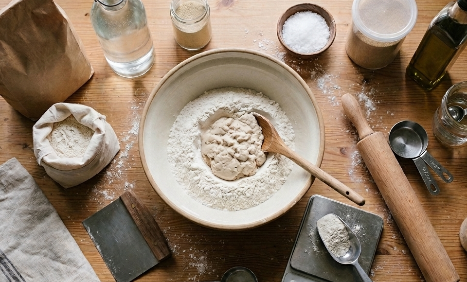
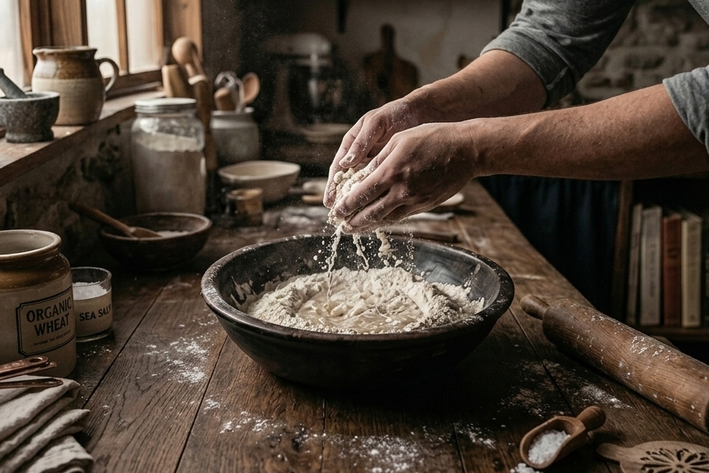
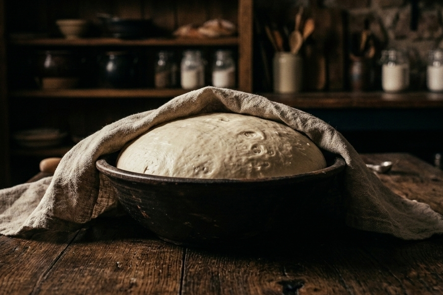
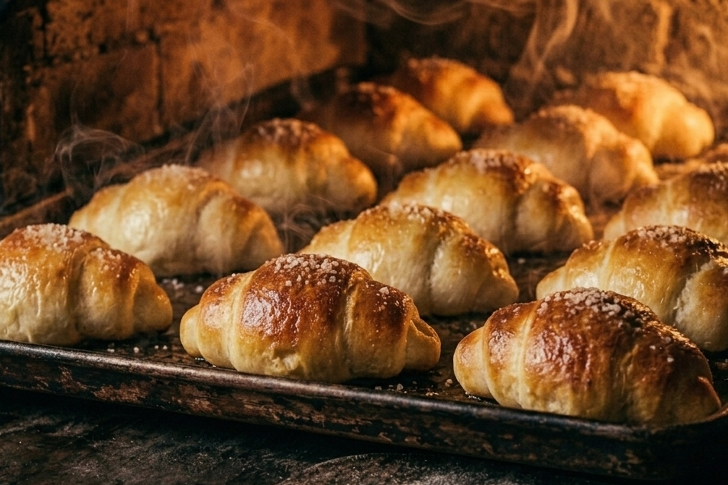

Every Bite Tells a Story.
We don't just bake bread; we curate a journey. From the first grain of flour to the final golden crust, witness the documentary of craftsmanship.

Transparency in Every Crumb
We source only the finest local wheat and the purest water. For families who value safety and enthusiasts who demand authenticity: our recipe is simple. No additives. No shortcuts. Just the natural essence of the grain, elevated to its fullest potential.
Behind the Scenes
Step 1: Mixing

Where flour meets water, and life begins. Hands work the dough to create
Step 2: Fermentation

Watching the dough breathe and rise. Here, time is our finest ingredient. Flavor grows slowly in the quiet of the bowl.
Step 3: Baking

The final golden transformation. The moment of perfection is here. Heat turns a simple dough into a warm, crusty masterpiece.
Crafted, Not Manufactured
Our bakery is a living documentary of passion. By sharing our journey, we build connection instead of just a menu. Experience the transparency, feel the anticipation, and taste the dedication in every loaf.